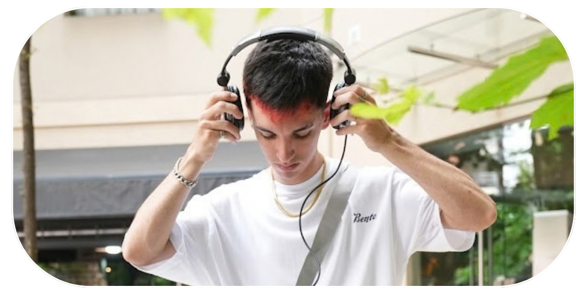
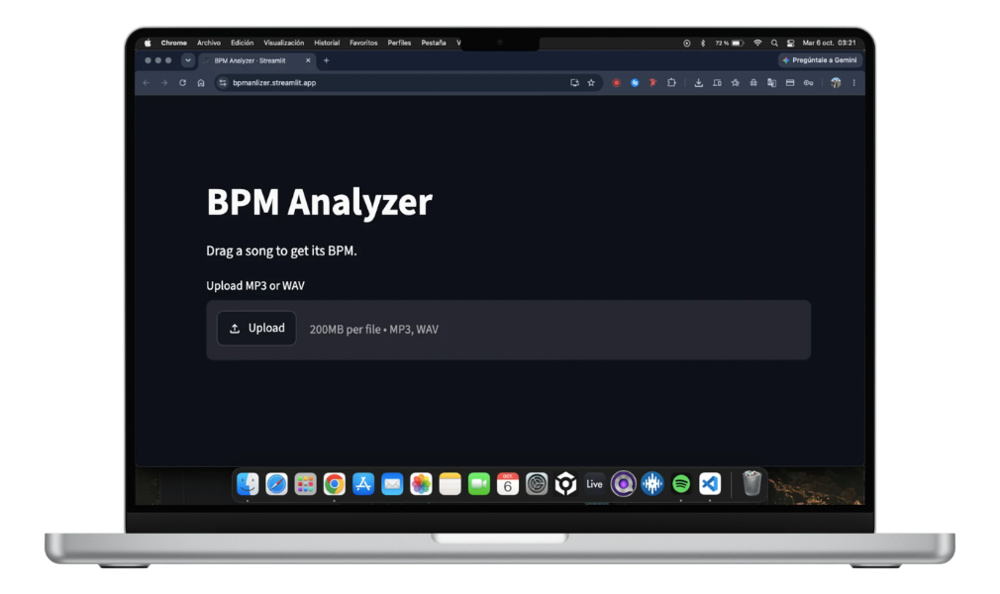

Fran Cartagena
DJ & Productor • Operador de Sonido • Diseño Gráfico • Programador Backend
 Hablemos!
Hablemos!
DJ & Productor • Operador de Sonido • Diseño Gráfico • Programador Backend
/// SOBRE MÍ

Soy Fran. Tengo 24 años y soy de Buenos Aires. Trabajo en producción de eventos, producción discográfica, DJ, diseño gráfico y desarrollo web y de software.
Desde hace más de 7 años me dedico a ser DJ, a la producción técnica de eventos (planificación, armado, sonido, VJ, iluminación) y al diseño gráfico para marcas y empresas locales. En paralelo, trabajo como programador backend.
Desde masterizar un álbum u operar una consola en un evento, hasta armar un servidor local, mi enfoque es siempre el mismo: prolijidad, eficiencia y hacer que las cosas funcionen. ¿No existe la herramienta? La inventamos.
Entiendo de hardware, de software y de cómo llevar adelante un evento y una fiesta de principio a fin.
Versatilidad y lectura de pista para cualquier escala. Produzco mis propias reversiones, remixes y edits para adaptar la música a la energía exacta de cada ocasión.
Próximamente definiremos este texto con tu experiencia en armado, consolas, microfonía y pantallas.
Próximamente definiremos este texto enfocado en Python, bases de datos y soluciones tecnológicas a medida.
Próximamente definiremos este texto sobre tu laburo armando identidad visual para marcas locales.
/// HERRAMIENTAS
Si querés hacer un remix, un edit, o simplemente necesitas saber en qué tempo está una canción rápido, desarrollé esta aplicación web para resolverlo en segundos.
Es la alternativa ideal para no tener que abrir un software de DJ o cargar un DAW pesado solo para analizar un MP3. Subís el archivo y el algoritmo te devuelve información súper precisa al instante: detecta automáticamente el BPM, la tonalidad (Key), el nombre del track, el artista y hasta la portada del álbum o single.

/// MÚSICA
Mis producciones viven en Spotify: lo que suena en la cancha, lo que pongo en el boliche y mis tracks originales.